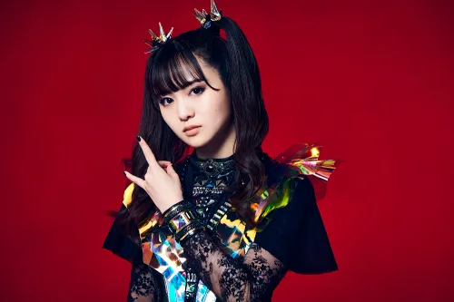
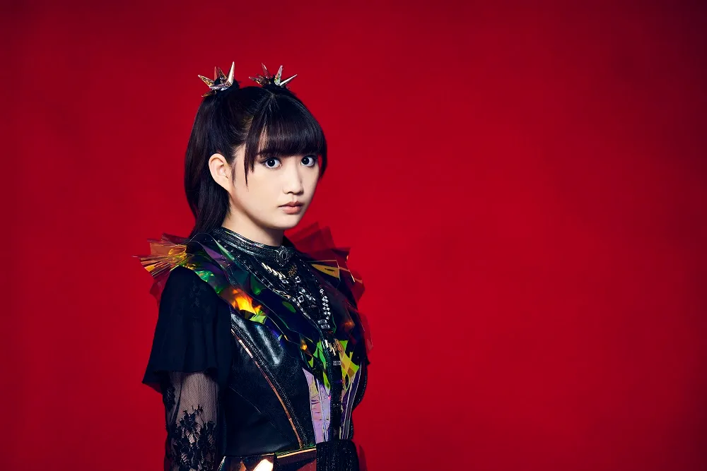
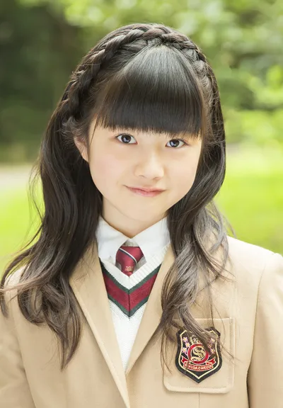

Líder e voz central do BABYMETAL. Suzuka impressiona pelo alcance vocal extraordinário, transitando com naturalidade entre linhas
melódicas delicadas e passagens de metal intenso. Sua presença de palco é amplamente reconhecida como uma das mais poderosas do
cenário metal mundial.

Moametal
Moa Kikuchi
Vocalista & Dançarina
Com uma energia contagiante e habilidades de dança afiadas, Moa é o coração pulsante das performances do grupo. Seu carisma genuíno e
entusiasmo em palco cativam o público desde os primeiros shows da banda.

Momometal
Momoko Okazaki
Vocalista & Dançarina
Momoko integrou o grupo como "Avenger" em 2018 e, após provar seu valor em inúmeras apresentações ao redor do mundo, foi confirmada
como membro oficial do BABYMETAL em 2023. Sua graciosidade e precisão coreográfica completam a tríade do grupo.
🦊
Ex-integrantes

Yuimetal
Yui Mizuno
Ex-integrante — saiu em 2018
Yui foi membro fundadora do BABYMETAL e peça fundamental na construção da identidade visual e sonora do grupo. Sua última aparição
oficial foi no Tokyo Dome em 2016. Em outubro de 2018, a saída de Yui foi confirmada oficialmente. Sua contribuição para o grupo é
lembrada com carinho pelos fãs da Fox Army.